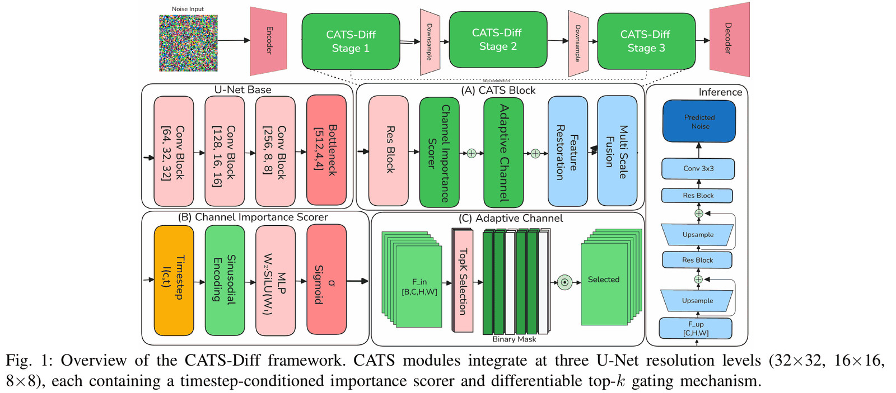
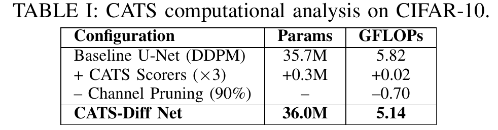
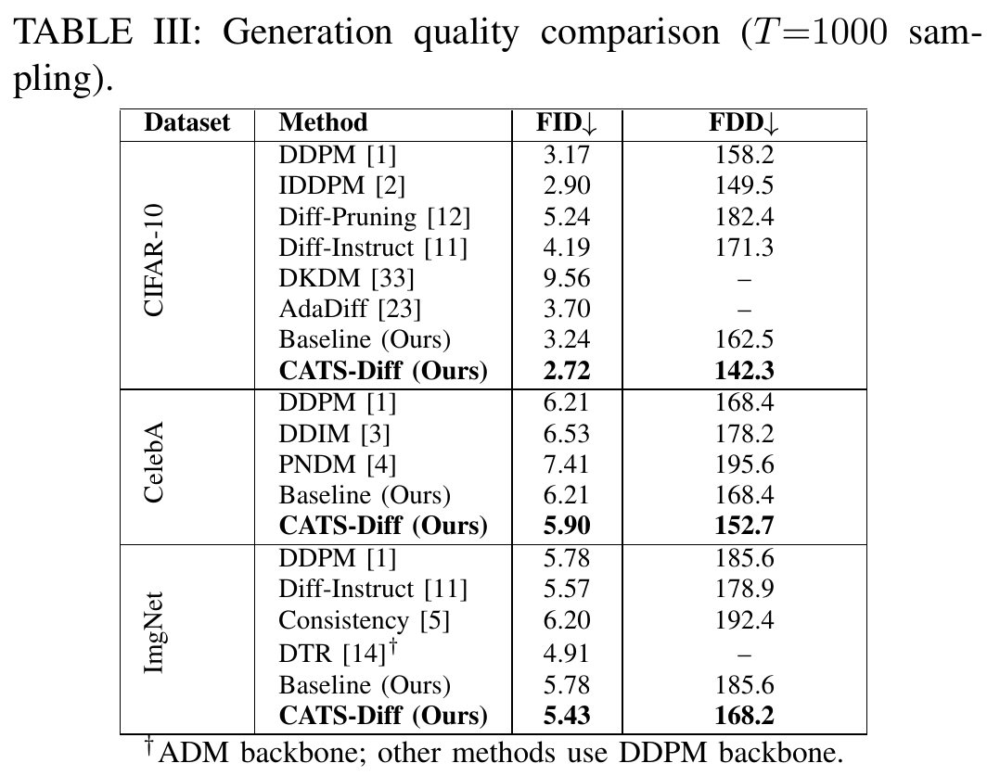
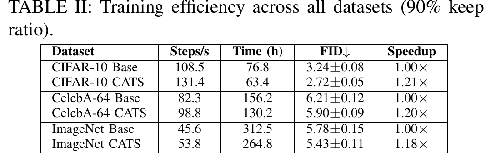
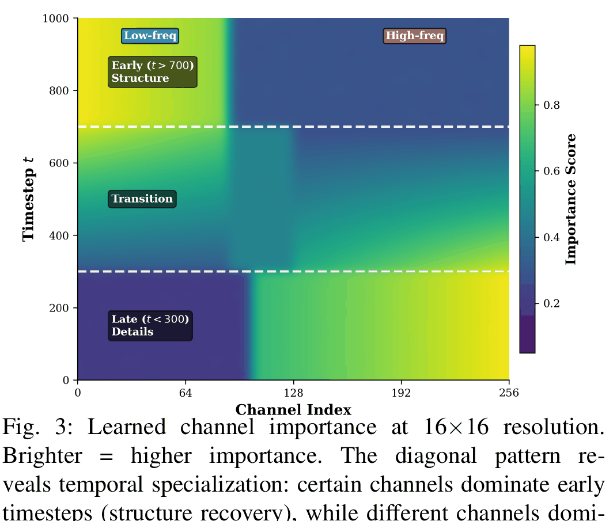
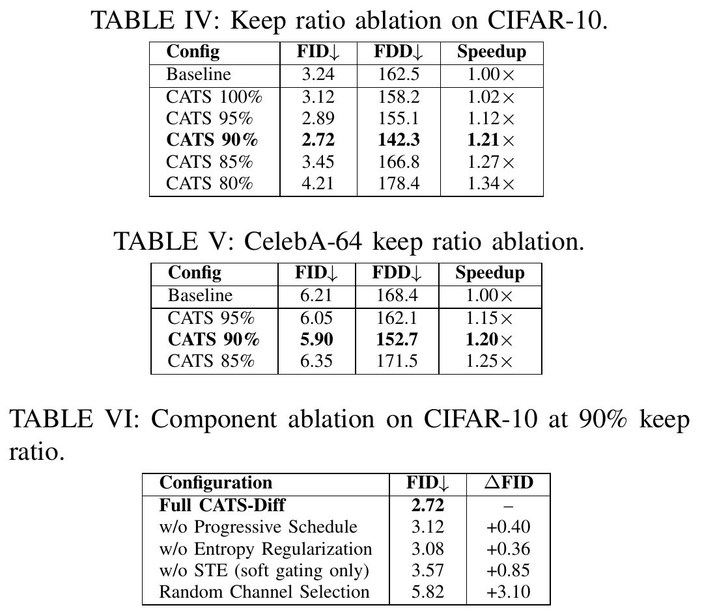
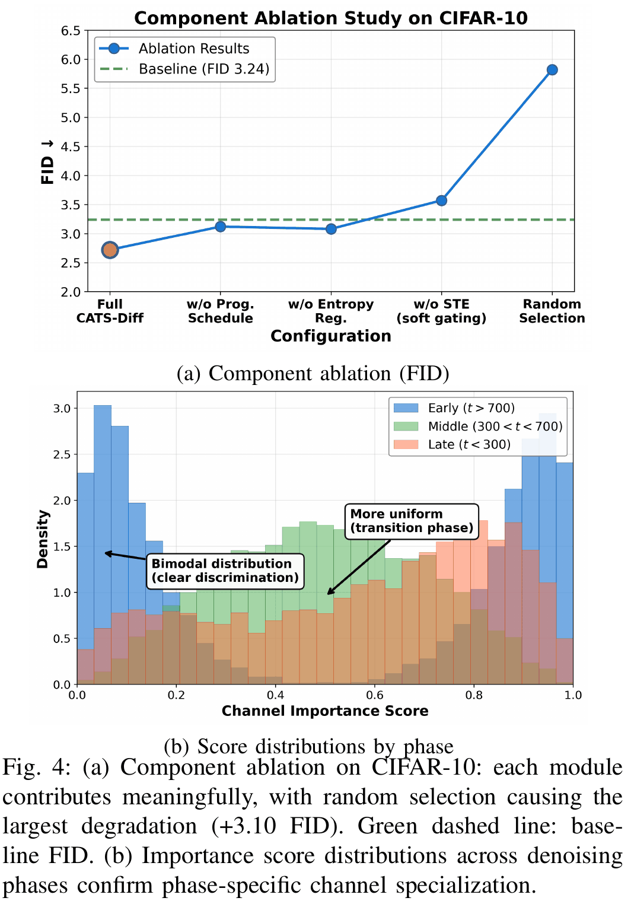
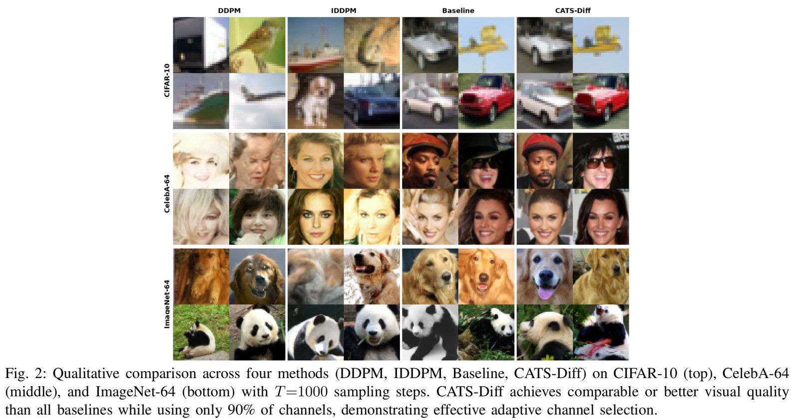

· 4 min read
UniReflow: segmentation and image synthesis in one step
Muhammad Ridha Agam, Novendra Setyawan, Chi-Chia Sun, Hui-Kai Su, Jun-Wei Hsieh
Semantic segmentation turns an image into a label map. Semantic image synthesis goes the other way, from a label map to a photo-like image. UniReflow does both with one model, in a single step. The paper received the Best Paper Award at NCWIA 2026.
- One direction-conditioned network handles segmentation and synthesis, each in one Euler step.
- 39.2 mIoU on COCO-Stuff in one step, within 1.6 of its 25-step teacher. SemFlow needs 25 steps to reach 38.6.
- 175 ms per image on an RTX 4090 instead of 2,775 ms, a 15.9× speed-up.
The problem
Recent unified flow models such as SemFlow treat segmentation and synthesis as one ordinary differential equation between image latents and mask latents: integrating forward segments, integrating backward synthesizes. They need 25 Euler steps per image, which limits throughput on consumer GPUs. Rectified flow and reflow distillation can collapse many steps into one, but the usual recipe for noise-to-image models needs several reflow rounds and does not transfer as-is.
The idea in one picture

How it works
Bidirectional teacher. A single SD 1.5 U-Net with rank-128 LoRA adapters on the attention and feed-forward projections and on the convolutions inside each residual block, about 10% of all parameters. The convolutions matter: attention-only adapters fail to learn sharp semantic boundaries. Integrating forward gives segmentation, integrating backward gives synthesis, with no change to the architecture.
Reflow. For each training sample the teacher is integrated for 50 Euler steps and the endpoint pair is stored, 50K pairs per direction. Training on these pairs straightens the trajectories so that one Euler step lands in the right place.
Direction-conditioned student. A learnable embedding for the direction (0 for segmentation, 1 for synthesis) is added to the time embedding through the U-Net class-embedding slot. Each direction has its own LoRA adapter of the same rank, trained with MSE for masks and LPIPS for images.
Why one reflow is enough
An image and its mask describe the same scene: they share boundaries, layout and the extent of each object. So the transport between them is close to a straight line, unlike transport from random noise. The paper measures this directly with the trajectory straightness integral S (lower is straighter): with the same teacher, pairing each image with its mask makes the flow 11.3× straighter on COCO-Stuff and 38.4× straighter on CelebAMask-HQ than pairing it with noise.

The results
Among one-step dual-task methods, UniReflow is the strongest entry. In a single step it improves COCO-Stuff mIoU over one-step SemFlow by 10.9 points at the full-fine-tune scale and 4.9 points at the LoRA scale. Specialists such as Mask2Former (segmentation) or BBDM (synthesis) still lead in their own direction, but none of them can do the opposite task.

The reflow step is what makes one step work. Without it, the LoRA teacher run for a single step collapses to FID 128.79 and 15.4 mIoU. After one reflow iteration, the one-step student reaches FID 56.41 and 33.2 mIoU, next to the 25-step teacher at 57.53 and 34.6. The full-fine-tune model behaves the same way: 39.2 mIoU against the teacher's 40.8.


What it looks like

The student keeps the global structure and the semantic layout in both directions. The teacher still renders finer textures and resolves thin structures better; hair strands, poles, fences and small accessories are where one-step inference loses detail, because those high-frequency regions rely on iterative refinement.
Takeaways
When the source and target share spatial correspondence, straightening the transport is a better route to fast inference than adding model capacity or integration steps. Next steps from the paper: a formal curvature metric, wider benchmarks such as ADE20K and Cityscapes, boundary-aware objectives, text-conditioned generation, and the same single-reflow recipe on other aligned tasks such as depth estimation and edge-guided synthesis.
· 4 min read
DuoDiffCount: frozen diffusion features for crowd counting
Muhammad Ridha Agam, Chi-Chia Sun, Hui-Kai Su, Jun-Wei Hsieh
Counting people in a dense crowd means finding hundreds of small, overlapping heads, learned from only a few hundred training images. DuoDiffCount asks whether the knowledge inside a frozen Stable Diffusion model helps with that. It does, and most of all where crowds are densest. The paper received the Honorable Mention Paper Award (佳作論文獎) at CVGIP 2026.
- Two frozen backbones, Stable Diffusion 1.5 and CLIP-ConvNeXt, feed a 14.38M-parameter trainable neck and density head. One deterministic pass, no test-time augmentation.
- Lowest MAE and RMSE among the compared counters on ShanghaiTech-A (51.34 / 77.13) and ShanghaiTech-B (5.87 / 8.90), and competitive on UCF-QNRF (84.51 / 158.85).
- The diffusion branch adds information, not capacity: it cuts MAE by 6.36 on ShanghaiTech-A and 11.02 on UCF-QNRF, and a parameter-matched control does not close the gap.
The idea in one picture

How it works
Frozen diffusion branch. The image is encoded by the Stable Diffusion 1.5 VAE and passed once through the U-Net at timestep t=1 with a fixed prompt, “a photo of a crowd of people”. Four decoder feature maps (1280, 1280, 640 and 320 channels) are tapped. The sampler never runs, so there is no randomness at inference.
Frozen CLIP branch. The same crop goes through a CLIP ConvNeXt-Base trunk (laion2B weights), giving four stage maps with 128 to 1024 channels. CLIP separates heads from background; the diffusion features describe how visual mass fills a scene, including occlusion and the texture of dense clutter.
Trainable neck and head. Each of the eight maps is projected to 256 channels, aligned to a stride-8 grid and concatenated. Two 3×3 convolutions and a density head produce a non-negative density map, and its sum is the count. Only these 14.38M parameters are trained, which fits on a single 24 GB GPU.
The results
Against a representative set of density-map counters, DuoDiffCount has the lowest MAE and RMSE on both ShanghaiTech splits. On UCF-QNRF a single frozen-feature pass stays competitive but trails the strongest trained counter, ChfL.

Diffusion features or extra parameters?
Adding a branch also adds trainable parameters, so a gain could just be capacity. The paper tests this with three arms under one locked recipe, three seeds each: the full model, a CLIP-only model, and a CLIP-only model widened to slightly more parameters than the full model. The wide control barely moves (57.13 vs 57.70 MAE on ShanghaiTech-A) while the diffusion branch reaches 51.34. Swapping in a second frozen backbone, DINOv2, closes only about 1.7 MAE of the gap.


Where the gain lives
Per-image paired comparisons show the benefit grows with crowd density. On UCF-QNRF it peaks in the densest quartiles and is statistically significant (Wilcoxon p = 0.0017). On ShanghaiTech-A it concentrates in the densest images. On sparse ShanghaiTech-B the two models are indistinguishable (Δ = −0.06, p = 0.85): there, CLIP already isolates each head.

Why keep the backbones frozen
As the CLIP trunk is adapted to the crowd data, the diffusion branch's benefit shrinks: large when frozen, still positive under light LoRA adaptation (+2.2 MAE), and negative under full fine-tuning on sparse ShanghaiTech-B (about −17.8 MAE). A frozen generative prior largely substitutes for in-domain backbone training, so DuoDiffCount keeps both backbones frozen.

What it looks like


Limitations
Most of the remaining error is in the extreme-density tail, scenes above roughly a thousand people, where heads fall below the stride-8 grid. Closing it will take higher-resolution fusion or adaptive tiling rather than a heavier neck. The model outputs only an aggregate count, never identities or tracks, and the paper recommends keeping inference on device and retaining no frames.
· 4 min read
CATS-Diff: faster diffusion training by picking channels per timestep
Muhammad Ridha Agam, Mas Nurul Achmadiah, Chi-Chia Sun, Hui-Kai Su, Jun-Wei Hsieh
Training a diffusion model is expensive, and every channel of its U-Net is active at every timestep. But early timesteps rebuild global structure while late ones refine fine detail, so different channels matter at different times. CATS-Diff learns which channels to use at each timestep and switches the rest off during training. The paper was accepted at the IEEE ICME 2026 Workshops.
- Lightweight timestep-conditioned scorers (+0.8% parameters) pick the most important channels at each timestep, trained end to end with a straight-through estimator.
- FID 2.72 on CIFAR-10 (baseline 3.24), 5.90 on CelebA-64 (6.21) and 5.43 on ImageNet-64 (5.78).
- 18–21% faster training, saving up to 47.7 GPU hours per run, with no pre-trained teacher.
The problem
Most work on faster diffusion targets sampling: better ODE solvers, consistency models, distillation. Training cost gets less attention. Knowledge distillation needs an expensive pre-trained teacher, and structural pruning applies one static mask that ignores how the job of the network changes over the denoising process.
The idea in one picture

How it works
Timestep-conditioned scorer. At each resolution level, a sinusoidal timestep embedding goes through a two-layer MLP (SiLU, hidden size 256) and a sigmoid, giving an importance score between 0 and 1 for every channel.
Differentiable top-k gating. The k highest-scoring channels are kept. A straight-through estimator lets gradients pass through this discrete choice, and dynamic weight slicing computes only the kept channels, so the FLOPs saving is real rather than masking after the fact.
Progressive cosine schedule and score regularizer. Pruning from the first step is unstable because the U-Net has not learned useful features yet, so the keep ratio eases from 100% to the target (5K warm-up steps, then a cosine decay). An entropy term pushes scores towards 0 or 1 so the ranking stays decisive.

The results
On CIFAR-10, CATS-Diff reaches FID 2.72, ahead of its own baseline (3.24), IDDPM (2.90) and Diff-Pruning (5.24), even though it prunes 10% of channels. On CelebA-64 it reaches 5.90 against DDPM's 6.21, and on ImageNet-64 5.43 against 5.78, all without a teacher model.


What the channels learned
Without any supervision on which channel should do what, the scores split into phases that match diffusion's coarse-to-fine nature: early timesteps (t > 700) favour channels for coarse structure, late timesteps (t < 300) favour channels for fine detail, and the middle shows a gradual hand-off.

Ablations
Keeping 90% of the channels is the sweet spot on both CIFAR-10 and CelebA-64; at 85% quality drops as needed channels disappear. Every component matters: removing the progressive schedule costs +0.40 FID, the entropy regularizer +0.36, the straight-through estimator +0.85, and random channel selection +3.10.


Samples

Limitations and next steps
The experiments use resolutions up to 64×64 and the DDPM U-Net. Scaling to 256×256 benchmarks and to Diffusion Transformers, by gating attention heads or MLP dimensions, are the key next steps. Because the scorer only looks at the timestep, it can also extend to cross-modal translation such as RGB↔depth or visible↔infrared by adding a modality embedding.
Your browser can't show the 3D view. The blog still works everywhere.
Read the blog